Mutants Browser DashBoard
of the Plant Breeding and Genetics Laboratory, FAO/IAEA Joint Division.
Purpose
This DashBoard provides a search interface for DNA variation. The intended purpose is a searchable catalogue of mutations and mutant individuals that is queried by genes-of-interest or chromosome/position ranges. The user will have to have a bcf/vcf file generated by SnpEff (http://snpeff.sourceforge.net/). The DashBoard will use the annotation information from this file. We provide a parser that will generate the data tables for the DashBoard. The user can add passport information to the individuals and custom chromosome identifiers.
For the impatient
$ conda env create -f envs/condaenv.yaml
$ conda activate Dashboard
$ bash utils/vcf_to_datatables.sh ../snpeff.output.bcf.gz
$ python mutants_dashboard.py
Setting up the DashBoard
Installing the conda environment
The DashBoard will need to run in a conda environment.
Create the environment defined in envs/condaenv.yaml like so:
$ conda env create -f envs/condaenv.yaml
Once created, activate the environment Dashboard like so:
$ conda activate Dashboard
Creating the data tables
Prerequisite is a vcf/bcf file that has been run through SnpEeff to annotate the variant’s effects (http://snpeff.sourceforge.net/). On such annotated vcf/bcf file run the parser script like so:
$ bash utils/vcf_to_datatables.sh <path to snpeff.output.vcf.gz>
This will generate all required data tables.
snpsiftdata.tab
genotype_data.tab
passport.tab
chromosome_name_mapping.tab
The user now has the option to edit passport.tab in order to add details to individual samples. In chromosome_name_mapping.tab custom chromosome identifiers can be provided in the “Chromosome” column. Note that subsequent runs of the parser (vcf_to_datatables.sh) will overwrite the existing files in ./data. Details on how the tables are generated can be found further below.
Creating the Dashboard
With the data tables generated (and located in ./data), run the following command to create the DashBoard:
$ python mutants_dashboard.py
Upon startup the dashboard will report where its running:
Running on http://127.0.0.1:8050/
Debugger PIN: 383-685-305
* Serving Flask app "mutants_dashboard" (lazy loading)
* Environment: production
WARNING: This is a development server. Do not use it in a production deployment.
In the above/standard case, point your browser to URL http://127.0.0.1:8050/ to view the DashBoard. The DashBoard’s display name can be configured by editing the “institution” and “tool” variables in mutants_dashboard.py.
Details on generating the data tables
We kept the extraction of relevant information from the vcf/bcf file into the data tables quite simple and use only standard software tools. All commands are executed when running bash utils/vcf_to_datatables.sh. We provide details below for transparency. The commands are easily tested and adjusted to meet specific needs. Example data tables are provided in ./data_example for reference.
SnpSift Data (snpsiftdata.tab)
This file is created from the <snpeff.output.vcf_or_bcf.gz> by utils/vcf_to_datatables.sh like so:
bcftools view <snpeff.output.vcf_or_bcf.gz> | grep -v "start_retained_variant" | \
$CONDA_PREFIX/share/snpsift-*/scripts/vcfEffOnePerLine.pl | \
SnpSift extractFields -e "NA" - "ANN[*].GENE" "ANN[*].DISTANCE" CHROM POS ID REF ALT TYPE "ANN[*].IMPACT" "ANN[*].EFFECT" "ANN[*].FEATURE" "ANN[*].FEATUREID" "ANN[*].BIOTYPE" "ANN[*].RANK" \
> data/snpsiftdata.tab
It uses snpEff/SnpSifts own functionality and scripts to extract the relevant annotation and effect information per variant. We are excluding lines containing “start_retained_variant”, because the most recent SnpSift version we used (4.3.1t) does not seem to understand this effect type.
Genotype Data (genotype_data.tab)
This file is created from the <snpeff.output.vcf_or_bcf.gz> by utils/vcf_to_datatables.sh like so:
CHROM_POS=$(printf "CHROM\\tPOS\\t");
SAMPLE_NAMES=$(bcftools query -l <snpeff.output.vcf_or_bcf.gz> | paste -s -d "\t" -)
echo "$CHROM_POS$SAMPLE_NAMES"> data/genotype_data.tab
bcftools view <snpeff.output.vcf_or_bcf.gz> | bcftools query -f "%CHROM\t%POS[\t%GT]\n" >> data/genotype_data.tab
It simply extracts genotypes for all samples at all variant Chromosome/Positions.
Passport Data (passport.tab)
This table is initially populated with the sample names found in the <snpeff.output.vcf_or_bcf.gz> file in the “Sample-ID” column and “NA” in each of the data columns.
printf "Sample-ID\\tPlant-ID\\tBranch-ID\\tVariety\\tGeneration\\tTreatment\\tDose\n" > data/passport.tab
a=$(bcftools query -l <snpeff.output.vcf_or_bcf.gz>)
b="\tNA\tNA\tNA\tNA\tNA\tNA"
for i in ${a[*]}; do
echo -e $i$b >> data/passport.tab;
done
The user has then the option to edit this file and replace respective “NA”s with relevant information for each of the samples. “Sample-ID” is the primary key and must not be edited. Lines must not be removed.
Example passport.tab file (after manual editing):
Sample-ID
Plant-ID
Branch-ID
Variety
Generation
Treatment
Dose
1-C7
Ca-2018-021
NA
Venetia
M0
Control
NA
1-D4
Ca-2018-025
NA
Venetia
M1
EMS
2%
1-E2
Ca-2018-030
NA
Venetia
M1
Gamma
50 Gy
Chromosome Name Mapping (chromosome_name_mapping.tab)
This file is created from the <snpeff.output.vcf_or_bcf.gz> by utils/vcf_to_datatables.sh like so:
printf "Contig\\tChromosome\n" > data/chromosome_name_mapping.tab
bcftools view -h <snpeff.output.vcf_or_bcf.gz> | grep "##cont"| \
awk -F "=|," '{print $3 "\t" $3}' >> data/chromosome_name_mapping.tab
The chromosome names are extracted from the vcf/bcf file and recorded twice (in 2 columns), as “Contig” and “Chromosome”. The “Contig” column must remain unchanged, however, the user has the option of mapping the “Contig” names to custom chromosome identifiers by editing the “Chromosome” column.
Customising the Dashboard
The Dasboard’s name, displayed in the upper left corner, is easily customised by changing the variables institution and tool.
institution='FAO/IAEA-PBGL'
tool='Coffee Mutants Browser'
Deployment
There are twe modes of deployment. On localhost or via the network/internet. They are mutually exclusive and when changing the code make sure the correct lines are commented and uncommented.
For a local/development deployment, edit mutants_dashboard.py and make sure that it looks as below:
###########################################
## production mode
#import flask
#server = flask.Flask(__name__)
#app = dash.Dash(__name__, server=server)
## then invoke the tool in the server like so:
## gunicorn mutants_dashboard:server -b :8000
############################################
## local/devlopment mode
app = dash.Dash(__name__)
Then invoke the tool on the local machine like so:
python mutants_dashboard.py
Upon startup it will report where it is running, the default is localhost port 8050. (http://127.0.0.1:8050/)
For internet/production deployment: In mutants_dashboard.py change the commenting such that it looks like so:
###########################################
## production mode
import flask
server = flask.Flask(__name__)
app = dash.Dash(__name__, server=server)
############################################
## local/devlopment mode
#app = dash.Dash(__name__)
Then start the tool on the server. For example like so:
gunicorn mutants_dashboard:server -b :8000
It can then be reached via the network/internet at the respective server address on port 8000. E.g., http://93.104.208.25:8000
Using the DashBoard
Variant Search Parameters
The starting point is either a gene name, a chromsome/position, or a chromosome/position range. This can be done by selecting the appropriate tab under Variant Search Parameters on the left panel. There are 3 tabs to choose from: Gene Identifier, Range, and Position. The first tab Gene Identifier gives the option of typing the Gene Name and the Max Distance from Gene in basepairs (bp).
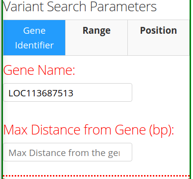The second tab Range provides the options of specifying the Chromosome Name and the Start/End positions of the chromosome.
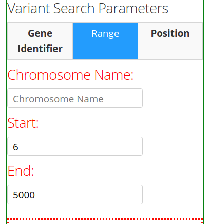The third tab Position provides the option to specify the Chromosome name and the Position (base-pair number) in the chromosome.
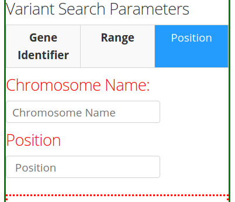Variant Filter
After inputting the Variant Search Parameters of choice, one can specify the type of variant filter under the Variant Filter section of the left panel, which contains 3 tabs: Variant Type, Impact Type, and Effect Type.
Warning
All of the options in each tab under the Variant Filter and Passport Filter sections are extracted from the VCF file; i.e. the options are not hard-coded, rather dependent on the information present in the VCF file being analyzed.
The front-end/back-end developer should pay attention to and understand this information to avoid incorrect/erroneous results.
The first tab Variant Type gives the option of including different type of mutations in the search results. These include: complex mutations (complex), single-nucleotide polymorphisms (snp), multi-nucleotide polymorphisms (mnp), deletions (del), and insertions (ins). The available mutations may vary depending on the mutations present in the VCF file.
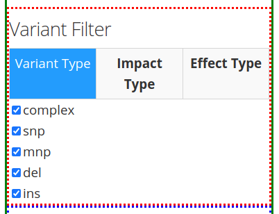The second tab Impact Type gives the option of including different types of impacts, such as: moderate, modifier, low, or high. More or less options might appear, depending on the information the software extracts from the VCF file, as mentioned in the Warning message above.
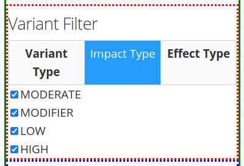The third tab Effect Type provides different options, depending on the information present in the VCF file. One can choose the effect type by clicking on the arrow found on the right of the search bar and then scrolling down to choose from the options provided.
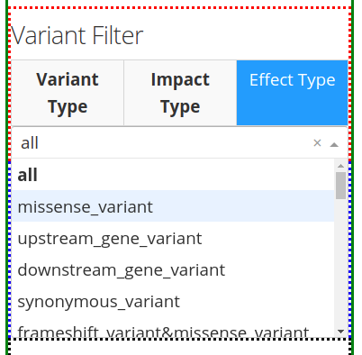Passport Filter
Note
The same situation from the Warning message above applies here. The options under each tab will depend on the information present in the VCF file. These options are not hard-coded.
The options under the Passport Filter depend on the user-input in the passport.csv file, which specifies multiple fields: Sample-ID, Plant-ID, Branch-ID, Variety, Generation, Treatment, and Dose. This file is used to when running the python mutants_dashboard.py command in a computer terminal. Using coffee as an example, the passport.csv file can be filled as shown below.
Using coffee as an example, the available fields in the first tab Variety provides the option to include specific verieties of coffee in the search results. The varieties available will depend on the user’s input of the passport.csv file.
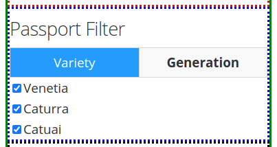The second tab Generation will also depend on the user’s input in the passport.csv file. For the present example, only an M0 generation is present.
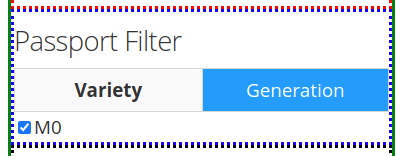Noise Removal
The section Noise Removal provides multiple options to further filter out or leave in noise. The first option Samples with REF Allele (00) gives the option to leave or filter out those genotypes that are similar to the reference allele of a reference genome. This means that no mutation occurred, so it should not be included as a variant. The second option Samples with Missing Data (.) pretty much is self-explanatory. Those fields with missing data are identified by a . in the VCF file. The third option Multi Allelic Variants lets the user include those alleles with more than one mutations. This can include mutated genotypes, such as 0/2, 1/2, 0/3, etc.
Result Columns
If desired, the results can already be filtered at the start. Reasonable defaults are preselected. If nothing is found, a respective message is displayed. If no such message is displayed, yet no table is shown, do not hesitate to hit the SEARCH button on the bottom of the left panel again.
The results will appear as a table.
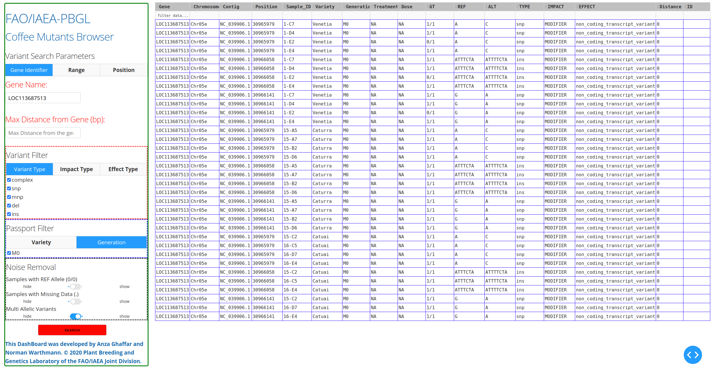{kind=link}
The results can be further sorted (by clicking on the arrows in the header line) or sub-selected (by entering the respective value in the 2nd line and hitting enter).
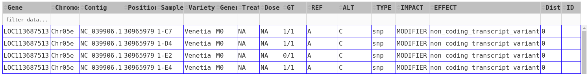{kind=link}
As an example, from the above results, one can choose the “1/1” genotype of sample 1-C7 under the GT ** and **Sample-ID column headers by typing the corresponding information on the second row under each column header and then pressing “Enter”. The results should only show those genes of sample 1-C7 with 1/1 genotype.
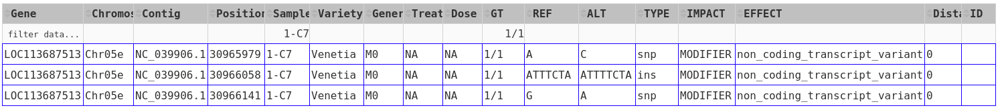{kind=link}
Most columns are self-explanatory. Sample refers to the sample name in the input vcf/bcf file. The additional information on the sample is drawn from the passport.tab file that the user can customise. The alleles are given as REF and ALT, denoting reference and alternative alleles (= variant/mutation). Genotypes are 0/0 for homozygous reference, 1/1 for homozygous variant, and 0/1 for hetero-/hemi-zygous. Additional allele classes are possible for multi-allelic variants, denoting the respective alternative allele (e.g., 0/2, etc).
Impact and Effect are displayed as recorded by SnpEff in the <snpeff.output.vcf_or_bcf.gz> file; same for the Distance to the gene, where 0 means that the variant lies within the gene. ID refers to the ID column in the vcf file, and will be empty if this column had not been filled upstream.
Copyright information
This Dashboard was developed by Anza Ghaffar and Norman Warthmann, © 2020 Plant Breeding and Genetics Laboratory of the FAO/IAEA Joint Division. Documentation was last updated in February 2021 by Anibal Morales, Plant Breeding and Genetics Laboratory of the FAO/IAEA Joint Division. If you find this DashBoard useful and want to use in in your own research, please get in touch by emailing n.warthmann@iaea.org. We are happy to provide an annotated (SnpEff) vcf/bcf file to help you get started.